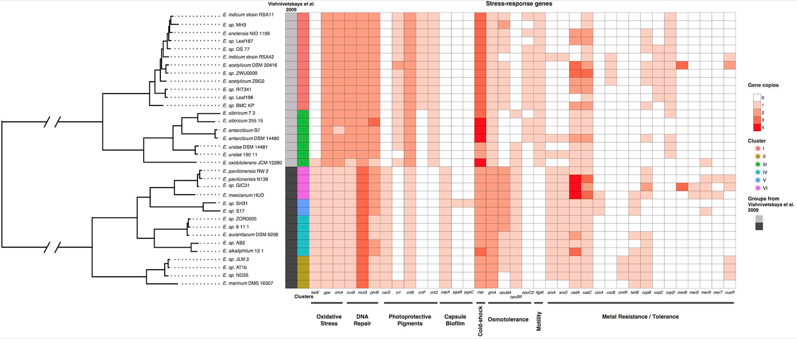

Solution

😞?
The pattern is gone when there are too many data points!
Reference: https://www.infragistics.com/community/blogs/b/tim_brock/posts/too-big-data-coping-with-overplotting
Beatiful network plot, but what can you get from this plot?
Reference:https://matthewlincoln.net/2014/12/20/adjacency-matrix-plots-with-r-and-ggplot2.html
